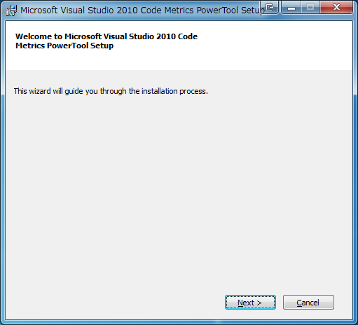
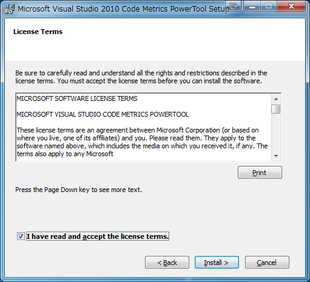
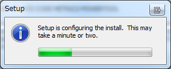
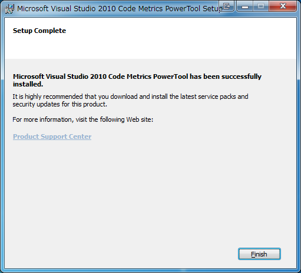

技術屋さんなので、プログラマーなのでそれらしいネタで情報提供しましょう。 最近の自分のトレンドはソフトウェア工学(っぽいこと)。 ソフトウェアの品質管理やプロジェクト管理に手を出しています。 会社でも作業工数の管理や進捗度合いの管理にRedmineを使っています(個人で)。 家でもRedmineでプロジェクト管理しています。 Viva!! Redmine …閑話休題。
コードの品質が良い、悪いって直感的です。 読みやすいソース？バグの少ないソース？保守がしやすい？機能追加しやすい？ そういうのを数字でわかりやすくしよう、ってのがソフトウェアメトリックスです。
ソフトウェア測定法 ソフトウェア測定法（ソフトウェアそくていほう）またはソフトウェアメトリック（英: Software metric ）とは、ソフトウェアやその仕様の属性の尺度である。 定量的手法の威力は他の分野で証明されていたことから、計算機科学の分野でも同様の手法をソフトウェア開発に持ち込もうとする努力が続けられてきた。Tom DeMarco は DeMarco, T. (1982) Controlling Software Projects: Management, Measurement & Estimation, Yourdon Press, New York, USA, p3 の中で「測定できないものは制御できない」と記している。
何だか難しそうですが、触れてみるのが一番。 というわけで、.NETでコードメトリックスを試してみましょう。 Visual Studio Code Metrics PowerTool 10.0というMicrosoft社が無償で提供しているツールがあります。 ダウンロード先はここから。 このツール、VisualStudio 2010のPremiumとUltimateのみで提供されているコードメトリックスと同じことをCUIで実施してくれます。 利用方法もコマンドをたたくだけのお手軽仕様。 MetricsSetup.exeというインストーラをダブルクリックしてインストールするだけです。 インストールは下記の手順に従ってください。 (1) [Next] をクリック。  (2) ライセンス規約に同意できたら [**I have read and accept the license terms.**] をチェックし [Install] をクリック。  (3) セットアップ進行中。2,3分待ってください(すぐ終わります)  (4) セットアップ完了。[Finish] をクリックしてインストーラを終了します。  以上で終了です。 今回はここまでです。 次回は実際にコード分析を行ってみたいと思います。